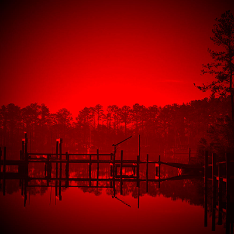
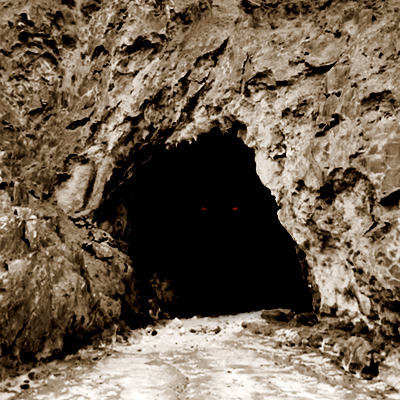

Mighty Beasts
Fantasy Faction Monthly Writing Contest Anthology, October 2015
(Art from the Bit Blot game Aquaria: http://www.bit-blot.com/aquaria/ ")
You know they're out there. Lurking. Just out of your sight. Maybe immortal. Or so close that it doesn't make a difference. Having survived for longer than human history exists. Because they're tougher, smarter and meaner than anything else.
Dragons, leviathans, kraken or other things from deep below - our mythologies are filled with gargantuan creatures and so is our pop culture (Godzilla, King Kong, ...). They're lurking. Or sleeping. Until they get disturbed...
All content originally appeared on the Fantasy Faction Forums in the Monthly Writing Contest. You can see more information (and even participate in the forums!) on this particular contest by visiting the site.
http://fantasy-faction.com/forum/(nov-2015)-mighty-beasts/(nov-2015)-mighty-beasts-submission-thread/
Table of Contents
- A Proud Son by Mr.J
- Winter Regrets by m3mnoch
- The Next Great Adventure by tebakutis
- Marked by Nora
- The Scourge by wakarimasen
- Leviathan by Jmack
- Cloud Eaters by Henry Dale
- The Magnificent Mythical Zoo (No Refunds) by Rukaio_Alter
- The Anonymous Hero by Elfy
- 100 Seconds to Poison by night_wrtr
- Not As Empty As We Think by Poppa Fred
- Waste by ArcaneArtsVelho
- The Discovery by Raptori & Saurus
A Proud Son
It was on a winter’s evening after I was awarded a disabled chicken that I left to kill the dragon. The runt of Hawk the Butcher’s personal stock of hens, it had a crooked neck and bristled feathers as if its life had been in a permanent fight, there was no meat on her at all. Hawk let me have it all the same, he had made a lot of money that day. I dragged the animal back by its neck through the streets, resigned to its pathetic fate she barely protested.
My son was waiting outside, perched on a rotting log like a dead animal. He had mud in his hair. I strung the chicken up and trudged passed my child without a word to fetch my knife. He did not look at me, simply staring into the distance with little balled fists. I could hear my husband gurgling in the bedroom, I would deal with him later. He was probably just hungry.
Taking the bird again I pressed her against a mouldy wooden bench and ended her existence with a thump of my heavy knife. Blood gushing from the tiny neck the head topple sadly to the ground, beak open as if gasping for air. I kicked the head into the grass and strung the chicken up again.
The child kept looking at me. There was no love in those eyes. He would sit and stare and pout with his young face, following me around the house with his silent disgust. He hated my sullen house, the grey walls of mud drooping into the blackened straw at our feet, he hated his father was bedridden and silent like a statue, a pale and artificial figure, I suspected he hated me too.
It was not the absent love of my own child that drove me to the mountain, or my husband turned to an empty husk. They were the catalysts, but I did it for my own glory. I have told others of my brave deeds to rescue my starving child and ailing husband from the grip of our rotting home, but I fear they will see the truth quivering behind my eyes. I went to be a hero, I went to rescue myself, I went to kill a dragon.
My boy. A sandy haired scrubby thing, white as chalk with a bulging skeleton seeping through his thin skin. Every time I tried to wash him I had to bite my lip to restrain myself from crying at his half-formed body. A boy of ten should not be this small, malnourished and weak. He would begin that tumultuous growth into a man soon, I could not fathom how to feed his even greater hunger, his new boiling emotions and the expected beatings from the other larger boys of one so small and weak. I could blame my husband. A loose overhanging rock could have fallen and hit anyone on the head in those mines. I could blame him but I do not. It could have happened to anyone. It just happened to be him.
My own payment slaughtering pathetic animals at the butchery was not enough to feed three. The little I could muster from my work was eaten grudgingly, my son staring into the distance with foggy eyes as he shoved watery liquid stained with gristle and bad meat down his veiny neck. I would take the final bowl to my husband, lean on the bed and shovel it down his neck, squashing his mouth shut so it wouldn’t dribble down his chin like a baby. Trudging through the town in the encroaching dark with arms trapped in a layer of dried animal blood, forehead sweating and stained with dirt, the fear of returning to my family home would ripple down my spine again. My son would watch me stumble through our creaking door without a greeting, dark eyes disappointed yet again. He had stopped trying to hide it.
After he had gone to bed, nestled against the icy skin of his former father, I prepared myself. Everyone spoke of the dragon, everyone knew there was a reward from the Duke if it was killed. No one had seen it since we were children, the old ones nodded wisely with their stories. Stories was all we had of the dragon. How it ate all of the livestock, starved the town. How it set farms and crops on fire for amusement, how it laughed as it did so, how it spoke to lost travellers and assisted them to safety before eating them idly. How it was fat and bulging and stole money, it was hibernating now in a slumber on its pile of accumulated wealth.
I did not believe the stories. What would a dragon want with gold? Animals couldn’t speak, that was resigned only to fairy tales they told us as children. The elder minds were so addled they had merged fiction and reality. But we all knew it existed, there was evidence of its power still scarred against the land. The reward was also very real.
I took my husband’s leather jerkin, furs and heavy boots. His thick cloak that stank of dust and a long starched walking stick to help me through the mountain.
The paths were steep, rocky and layered in black ice. I fell several times, nails cracking against stone, fingers bleeding from sharp edges, bruises peppering my sore legs and arms a dark purple. I occasionally turned my frozen face to the misty expanse below, my home an invisible speck among the mass of houses. A melancholic clump of humanity nestled into the rocky environment, we clawed for our living in this part of the world. I waited for the wind to stop tearing at my skin, face so numb to the cold I felt as if I were living in a shell, looking out at the grey and white world through a mask of dead flesh.
There was steam rising from above. My dead senses flaring into life again, nostrils burning with the stench of stale blood and a metallic odour that stung my eyes. Water dripping from my cheeks and freezing into ice from the wind I hurried forward to the strange sight. As I entered the grey cloud billowing from beneath me I could see through the fog a dark black creature leaning against a crevice. Its legs were spread awkwardly underneath it, head pushed painfully into the rock, titled and staring at nothing. If not for the steam pumping from its blazing nostrils I would have presumed it was dead and rotting. Despite the few signs of life I was too terrified to move.
It is at this moment where my story lies. I recount in my tale of bravery that the dragon mocked me for my stealth, stirring its elongated legs from its slumber and attacking me before I cleverly sliced into its neck with an axe. A weapon I had stolen from Hawk. But I will not lie to you reader. My breath was empty and stomach churning in pain as I clambered down that rock face to the comatose creature. As I drew closer the stench hung heavy in the air, humid and foul. I could see its hard crackling skin was fading to a prickled whimper. As I sliced into its neck with my axe the eyes moved to my tiny figure. She did not lift her head, she thanked me with watery eyes, closing them for the last time.
I sliced off a foot and one of the last shining scales as a reward. I felt no victory, I felt rotten and empty. I was angry at the world. I did not notice the journey down the mountain, I trudged one foot at a time, my mind lingering on the sad creature. It must have lain there for years in suffering, waiting for death, pleading someone would take it from her. I wanted to crawl into a ball and hug her, press a hand against her claw and hold its last thoughts from this world into the next. This image has plagued my mind ever since. My sadness and anger at its fate, snapping at others for no reason, silently demanding to know why they never helped it. It was the stories, they stole its life and cloaked it in an invisible lie of suffering. I hated them the most.
But this is not the end of my own story. I only wish it was. But I returned to my home, my child was not waiting for me. He was cross legged at the end of my bed, the butcher knife resting in his open palms, soiled and blood dripping between his fingers to the floor. A long deep slice into my husband’s throat, his face was stained red and head titled to one side, eyes bulging white in a glassy horror.
My son never looked at me again.
Winter Regrets

Sap swelled and snapped limbs as a harsh, wintry wind sheared through the treetops. The morning sunlight reflected painfully off the drifts, but did little for warmth. As she rested, clouds of steam surged from her lips, only to get swept aside by the next whistling gale.
Her stomach growled and there it was again. The flick of movement. The glint of a round eye. The twitch of a whisker.
She leapt. Snow and dirt erupted in a shower of debris.
Powder snow drifted in the wind as rocks and twigs rained down. A brown, earthy scar marred the whiteness where her target had been. Her stomach growled again.
There was no food. There hadn’t been for days. She needed meat.
She needed to find another bear.
The cave had been well-hidden and out of the wind, but that meant the snow was not able to pile in front of the entrance. She had found it.
The bear had roared and charged her instantly. She had swatted it through the air to crash into a pine tree. The bear had rolled to its feet, shaken, and stood on its hind legs for a second attack. She had reached down and snatched the animal’s skull in one massive paw and had torn it free.
She had fallen on the still-warm corpse with a ravenous hunger, tearing wolfishly at the flesh with fangs the length of the bear’s forearms. Most of the meat had disappeared in seconds.
That was when she had heard the cubs. The bear’s children had rushed her. They had charged from the mouth of the cave where they had been hibernating, snarling to protect their mother.
Heart sinking, she had fled.
In that moment, she could not have taken the cubs as the wolves had taken hers. Now, she was not as sure. Given the choice between another day of cold starvation or devouring bear cubs, the mother in her feared the finding of another cave.
The wolves were different. She longed to find the pack. She’d been hunting them for half a moon. She would feast, swift and ferocious amongst them, alphas and cubs alike.
Stacks of bones and piles of fur, torn earth and shredded trees. Violence and warmth would follow her vengeance.
She snarled.
Growls thundered from her empty stomach in response. A gust of wind hurled a flurry of snow in her eyes. Snorting, she shook her head and emptily padded on.
Nine heartbeats and she paused.
White fur flashed from the corner of her eye. She roared and pounced. Huge, sweeping claws again ripped up the earth surrounding the rabbit hole. Again, she was not quick enough. While no creature alive could pace with her in an open run, the darting speed required to spear a rabbit on her claw was beyond her. She was too large. Worse, hunger and weakness seemed to be making her even slower.
Another whipping gale froze along her rippling back. This one, however, carried a new scent.
Cattle.
That meant a man-village was nearby and men were dangerous. Far more so than wolves.
Even a full pack of wolves was easy meat for her. A pack of men, however, would destroy her. They posessed unending hordes of biting razors and sharp sticks. There was a reason she had lived as long as she had — She avoided men.
But, she was so hungry.
With the strength from one quiet cow, taken under the moon, she could finally catch and devour the pack of arctic wolves she’d been chasing all these long cycles. The men would never know. If she found any of the man-fenced grazing fields, she promised herself she’d wait until nightfall before she moved in and started plucking up cows.
She thrust her snout skyward. What luck! The man-village, the cattle, and the wolves were all in the direction of the rising sun. She might catch a wolf or two prowling around the man-village, and if she came upon a fat cow lost in the fields, she would snatch it up as she ran.
A rumble rolled from her belly up through her throat. Yes, cows were delicious.
Looking around at the destroyed rabbit holes, she scoffed and rustled the trees. Then she stood, confident, and started loping, the morning sun in her eyes.
After a league or two, the scent grew stronger and she slowed her pace. She was hunting. Quiet and careful. The wolves must not sense her until she was upon them.
Ahead, she spotted a small clearing. The facing sun reflected off the snow and it was difficult to spot the wolf moving about, rustling in a pile of small sticks. It was probably nosing around in a rabbit den. Hopefully, the wolf would catch the rabbit — That meant double meat for her.
She crept forward.
There were no other wolves in sight. This one was alone, but knew others were not far. She found their faint scent blowing through the trees. A long string of drool dangled its way from her jaw to the ground below.
She was getting closer.
When this one darted, she would concentrate and follow only this one. Once she gulped it down, then she would pick another from the pack and run it down. Then another, and another, and another. She would not be distracted as they scattered.
Her stomach rumbled. The wolf’s head popped up.
There was a strange smell coming from beneath the wolf, but it was about to dart. She didn’t have time to ponder whatever prey the wolf had taken down. Hunger pushed her.
She pounced, jaws snapping the wolf in half.
The fireplace flames in their little cottage burned low and the outside chill seized on the moment to seep in to Adax’s knees. He pulled the blanket tighter and wondered what was taking his son so long to bring in more firewood.
Irritated, he finally stood and stretched, working the imprint of the wooden chair from his bones. He looked at the empty hanging peg by the door, grunted and wrapped the blanket close, bracing for the cold outside.
Adax stepped across the threshold and out into the snow. There was a fierce wind blowing and the blanket did little to guard against the sharp cold. He followed Dav’s tracks in the snow from under the eaves and out to the small shed where they stored the firewood.
It was empty.
It was empty of both firewood and of his son, Dav. Worry niggled in the back of Adax’s mind. He pulled the blanket tighter and followed the small bootprints to the fence surrounding the cowshed.
As he walked, one of the milk cows nibbling the last of the shoots surrounding a fencepost lifted its head in the air. It snorted, whined, and trotted back to the safety of the shed.
The wind whistled again and Adax worried. Steeling himself, he started jogging alongside the boy’s tracks leading to the nearby woods where they typically had harvested their firewood.
“That boy should know better than to head out here in the cold by himself.” He tried to replace the growing fear with anger. “So help me, if he’s gone and torn my good cloak on some sharp branch, I’m going to use his hide for my next one.” But at least he’ll be warm, wrapped in the wolfskin.
A tree-shaking roar echoed with furious anger through their little valley. Adax stopped and covered his ears but still felt the rage-filled rumble deep in his own chest. After three heartbeats, it was followed by a wailing howl, long, slow, and mournful. The sadness drowned the shrieking wind before slowly dying along Dav’s tracks.
Adax’s face rippled with dread. His stomach lurched and he flung the blanket to the side. He wished he’d brought his axe, but whatever horror he was about to face, his own teeth and knuckles would have to suffice.
Adax ran.
The Next Great Adventure
There were many ways to die inside an undersea research facility. Crushed beneath a poorly stacked food crate. Asphyxiated due to a faulty CO2 converter. No one had ever told Commander Mark Sullivan what to do if a mile-long leviathan crushed his station.
Somehow, those topside left that out of the emergency manual.
Claxons blared as Mark led his survivors through the increasingly deformed plastic corridor connecting Central Command with Hydroponics. Again the monster outside Echo squeezed, compressing his undersea facility with tentacles thicker than corridors. Metal buckled and plastic popped.
“Could we get someone to shut off those goddamn alarms?” Chief Engineer Jean Rosseau shouted over the racket. “They’re making my headache worse!”
Undersea Research Station Echo was a cluster of domed habitats that would very soon be a cluster of metal and bodies. Mark didn’t know how the tentacled monstrosity crushing his station had come to be. He just knew he had to get his surviving crew to Hydroponics before they all drowned.
Plastic buckled and the frothing ocean burst from a rip between bulkheads. Mark’s husband, Desalination Officer Ron Sullivan, slogged through rising water lugging a metal backpack. Ron squirted superheated quickseal above and below the water. He stopped the cold ocean at their waists.
“Won’t hold long,” Ron said, gasping as he recovered from wielding the bulky sealer. He glanced into the dark behind them. “Where’s Rosseau? Angeloro?”
“Not drowning,” Science Officer Angeloro said as she hopped around the corner clutching Rosseau’s shoulders. “The water helps. It’s easier for me to move when I can float.” Despite her mangled leg and bloodied face, Angeloro remained as calm as any of them.
“We’re going to make it out of here,” Mark reminded the survivors. He forced himself to focus of those still alive and not the twelve others, now floating in briny seawater behind the sealed hatches at Central Command. “If we keep our heads, we survive.” He couldn’t save people who were already dead.
Ron grimaced at the sealed round hatch ahead of them, at the baleful light casting shimmering red across the seawater flooding the corridor. “Rosseau,” Ron said, “might need you to override this hatch.”
“Keep your pants on, Sully!” Rosseau handed Angeloro off to Mark and sloshed through the waist high water, broad shoulders squared. “It’s not as simple as changing a filter, you know.” She grunted and pulled at a deformed plastic panel beside the doorframe. “Dammit, man, help me get this off!”
“You know,” Angeloro said quietly, “the thing crushing our station might be one of those unknowns topside warned us about.”
“You think?” Mark didn’t have any idea what was squeezing his station to death - a giant squid? A giant octopus? – but he did know it was cracking Echo open like an oyster shell. Nothing was strong enough to do that. Nothing from Earth, anyway.
“Either way,” Angeloro said, “it’s vital we get logs of this attack topside. In case you didn’t notice, this leviathan went after our communications tower first.”
Mark fought a chill as he helped Angeloro toward the sealed hatch. “Which implies intelligence.” That made it even less likely the thing strangling his station had originated on Earth. “You think it’s alien?”
“If you mean extraterrestrial,”Angeloro said, correcting him with the calm indifference of a woman who remained as precise as her undersea experiments, “I’d say there’s a very strong possibility.”
“Well,” Mark said, as Ron and Rosseau snapped off the stubborn panel. “That’s terrifying.”
Rosseau swapped out wires as bits of panel sparked. The corridor groaned and shifted as the monster outside squeezed again, like a boa constrictor wrapping itself tighter around prey. Another bulkhead popped, seawater frothed, and Ron sprayed quickseal while shouting curses at the sea.
The light above the hatch chimed green as seawater sloshed up to Mark’s armpits. Ron grimaced and shrugged off his metal pack. “That’s it.” He took a shuddering breath. “I’m out of quickseal.”
For one blissful moment, Mark was alone with Ron as they climbed Mount Everest together. It was adventure that had driven them together, adventure that led them to accept a year-long tour on an undersea research facility. Echo had been one more mountain for them to climb.
Strained machinery groaned as the hatch leading into hydroponics rattled open. Mark felt a tug that quickly became a riptide. He locked his arm around the guardrail at the elbow and wrapped his other arm around Angeloro’s slim waist. “Hold on!”
Water pulled. Mark’s fingers and arm and elbow hurt as hissing seawater struggled to rip them away from the bulkhead. Finally the current slacked enough for Mark to unclench his pulsing, pain-filled arm. He and Angeloro sloshed through the ankle deep water that had equalized between Hydroponics and this corridor. It seemed Hydroponics was, as Mark had hoped, intact.
This dome made up Echo’s center, protected by six other slightly smaller domes in a hexagon formed of metal and plastic corridors. Mark had known this would be the last dome to crack. What he didn’t know is how much time they had left. Small windows topped Hydroponics and Mark could just make out the mottled purple body of the leviathan strangling his station from above, bathed in emergency lights.
“Pods.” Mark pointed to the two closed hatches on the far side of the Hydroponics dome, metal circles surrounded by green emergency lights. “Each has enough oxygen for four people.”
There were pods across the facility, of course – every dome had at least two – but Mark suspected the other pods were already lost, crushed just like Central Command. Ron took Angeloro’s other arm and together, the three of them sloshed through ankle deep water behind Rosseau. They hurried beneath heavy gantry after heavy gantry festooned with hanging vegetation. Humid air choked everything.
Something groaned outside the station, a chilling sound like a great whale. It was loud enough that when it finally stopped, Mark couldn’t hear anything over the ringing in his ears. The whole room buckled. Rosseau turned, shouted something, and then a falling gantry crushed her like a grape.
Ron screamed beside Mark as they stared at where Rosseau stood one moment ago. Mark willed Rosseau to rise from that gantry with a smirk, howling like a madwoman and grateful to be alive. Rosseau didn’t rise. She wasn’t going to, and now that gantry was between then and the pods.
Mark pushed forward, pulling Angeloro and Ron with him. Seawater continued to rise, lapping at their thighs, and that told Mark Hydroponics had new leaks they couldn’t seal. Mark left Angeloro with Ron and dived, two minds working as one, and wriggled beneath the gantry. He popped up on the far side.
Ron and Mark locked eyes, and Angeloro didn’t argue or question them. She closed her eyes and dived. Ron dived and Mark did too, and a moment later Angeloro surfaced, gasping in Mark’s strong arms.
“Move!” Mark shouted at his husband.
Ron dived, but as soon as he went under the room buckled again. The gantry shifted and Mark’s world stopped. Then Ron burst from the water, facing the metal gantry and clutching it like a drowning man.
“Okay!” Mark shouted. “Time to claim our medals!”
Ron grunted as he wrapped his upper body around the gantry, but he didn’t push off. “Gantry shifted as I came up.” He looked almost embarrassed as water swirled. “Trapped my leg.”
“Well,” Mark shouted, “we’ll untrap it!”
“No time.” Ron grimaced at seawater sloshing about at Mark’s waist. “Get to the escape pod.”
Mark glowered at him. “You don’t give the orders down here.”
“We’ll get him out together.” Angeloro dropped off him into water high enough to let her float. “On three-“
“No.” Mark pointed at the green circles. “You get to those pods.”
“Respectfully, sir-“
“You said it yourself,” Mark interrupted. “Something extraterrestrial snapped off our communications tower. Someone has to let topside know what happened down here.”
Angeloro looked between the two of them. “Is that an order, sir?”
“It is.”
Angeloro pushed off him and splashed away, jaw clenched and eyes narrowed. She dove into a strong breaststroke, fighting swirling seawater to reach the half-submerged escape hatch. Not looking back.
Mark clutched Ron’s hand as Angeloro struggled with the panel. It opened, water rushed inside, and Angeloro did too. As the hatch closed, she watched them both and sketched a shaky salute.
A thump echoed as Hydroponics groaned and Angeloro’s escape pod whooshed away. Safe, Mark hoped, from the thing that struggled to drown them. Above them, plastic windows crackled and split.
“What’s next, commander?” Ron asked, as seawater rose to their necks. “Where do we go from here?”
“Where else?” Mark closed his eyes as bulkheads shifted and popped, squeezing his husband’s hand and sagging against the metal gantry. “Our next great adventure.”
Ron squeezed his hand back. They had done all they could, together. Topside would learn the truth.
The frothing sea crashed down.
THE END
Marked
I was born marked, and it is well known to my people that the marked are cursed.
Of course they call it a blessing, just a too dangerous one to keep around. We attract all sorts of things even as babes. My tribe dutifully took the Pilgrimage to deliver me to the only place where my sort can be safely left.
Abandoned.
Out of our mountains and weeks through the desert, each night the camp setting in the ritual shape spiraling around me, arranged around my skin's shinning blue lines. Each day spent curled in the arms of my mother, shielding my eyes from the hot light.
She would whisper me stories. She told me how she cried, when I opened these eyes to her and she saw the glinting black orbs there, like one of my father's polished obsidian blades starring back at her, she said.
But she loved me still.
Not like I love you.
But you love me like you love yourself.
Because it's the same thing. We're the same thing. Noone else matters.
Of course others matter. We wouldn't be us, if not for them, their crude beliefs and dabbling magic.
Can they truly use magic?
Yes. Every evening before the sun set the healer would come for me. She'd look at me hard, and talk to me. Like my mother, she believed I understood, I think, even though I was but two moons old and a gangly thing grown too fast.
She'd make a little pit of desert sand and turn it to mud. Just enough precious water for her to mark over the marks, to blot parts of the growing light in my patterns. She turned the beacon off, somehow. I let her work dry. No point in defiance. She wasn't curious to try anything new either. All that mattered was that it seemed to work and no one died during the trip.
At least not because of me.
They left you to die.
No, they left me so they could live.
Live without you?
Without the fear of me, the fear of imminent disaster.
You're no disaster.
You know what found me first... They'd barely left me that I attracted a storm.
I know. Elementals are so sensitive.
And plenty live around the Ny. It's probably why tribes think it so powerful and leave us marked there.
The healer had set me kneeling on the moss, no other dared to touch the Ny's oasis, its neat border sitting like an improbable green scab on the red flesh of the desert.
They all knelt before me in the dirt, one by one brushing my chin, begging me, shy of my eyes.
"We did right by you"
"We brought you home"
"Remember your tribe"
My mother told me to be brave, her blood mixed the red sand for the last dusk ritual.
The healer dabbed my skin and told me to be wise.
I watched their figure dwindling to smudges, and told myself to be patient.
I laid on my back in the mossgrass and waited. Night closed in and my skin crackled, my eyes leaked the light back to the sky. Finally the storm came for me.
But you were not marked to ride such a puny thing.
Elementals aren't puny.
Some can be. Most are. Compared to us. I'm glad I found you. You made the moss glow around you and the storm was red and angry. A beautiful sight. And you were mine.
As you are. But we should go. You know what will happen tonight. We feel it. I haven't forgotten how they brought me home instead of dooming me. I want to save them from the mistakes of others. They tried, for me.
For themselves.
We owe them what we are.
Fine... You know I can't refuse you.
Milano was walking home with his sister Sina when it began.
She was telling him the latest gossip on the birth of a marked in the valley over, in the Otari clan. It had been ten years since the last one.
One that had been born to Milano's clan.
Unlike his sister, he remembered the event, and even though he had been quite young, the pilgrimage had left him an indelible memory. He found himself grumbling like an elder at the lack of tradition of the Otari : the fools would not go to the Ny. His sister said that they had discarded the babe this morning.
She was coming home to report the news.
The lights of their village shone in the distance as the sun set.
Life stilled.
Silent but for the earth shuddering.
And then Milano saw it, across the valley, a chunk of the mountain coming to life.
The rumble deepened and a loose feeling spread in their legs. A horrible whirring sound rose with the spasms that sent the siblings crashing to the quaking ground.
Across from them an entire wall of rock detached itself, standing up.
"What..."
Monstrous maws broke the earth in an explosion of soil. Immense limbs made out of shards of mountain rock, green from the trees and vegetation still clinging to them, freed from the walls of the valley.
"This is where the Otari..." Milano gasped.
Veins of light flickered along the creature's arms and torso, shinning purplish blue. A roar came out of the gaping stone mouth, the sound of a thousand rocks ground together. Eyes lit like beacon fires in the grottoes carved into its shapeless skull.
"A golem?" Sina asked, panting.
"No." Milano said, turning to her. "A rock elemental. You need to warn the village, Sina!" He shoved her on the jagged path. "Run!"
She did, and Milano turned back to face the monster. It wasn't like the village needed warning. It only seemed like the safest option. As the monster tore its legs from the mountainside, the very concept of safety eroded in Milano's mind.
He took a step backwards. And another.
What had the Otari done? Those lines, the sheer size of the creature... It was marked. They'd doomed everyone, the fools!
Milano froze. A shape had caught his eye overhead. Blue lines coursed like lightening through a mass that twirled and grew ever larger in the sky, till a dark snout broke through the cover.
Milano gaped as the endless coils of a Dragon spilled from the clouds and came crashing down on the valley around him.
Wind surged, felling already weakened trees and sending Milano tumbling to the ground. A deafening chorus of roars exploded, the Dragon started circling the elemental.
Only in paintings and carvings had Milano ever seen a Sky Master. No wings kept it aloft, its black snake-like body, shot with electric blue veins, contorted in the air, its tail whipping thunder.
The sheer size of it beggared the mind.
The stone elemental attacked, sending rocks flying as it rushed its opponent. Clawed limbs shot forward and the Dragon tightened the loops of its body in a choking grip. Blocks of stone went crashing through the valley. Claws tore at its sides, coils stressed its joints, snapping, dismembering. All the elemental could do was hurl itself to the ground and bellow. In vain.
The fight was surprisingly short.
In the last tremors of the struggle between monsters of nature, something moved to meet Milano on the destroyed path.
It was a grey shadow against the darkening night, neither here, nor there, its tan skin bearing a constellation of glowing freckles, sprayed around the complex lines that lit darkness in hues of blue, a pattern bleeding light in the night.
It stepped forward, towering above Milano, whose breath was coming short and labored. He'd never seen or heard of an adult marked before. Pitch black eyes glintered, starring back.
Pushing himself up on trembling legs, Milano stood and gave his best, deepest bow, hands clasped before his head.
"This mighty Sky Master is your Vessel, is he not? I owe you my life. So does my clan, I believe. Please accept our earnest gratitude."
The marked chuckled and Milano looked up. The black eyes sparkled with amusement.
"Yes, I am this Dragon." It spoke with a deep, humming voice. "He is my body, for mine was weak, I am his spirit for his was weak. How very knowledgeable of you!"
The marked stepped forward and reached for Milano, fingers touching his chin. Up close, its body was incohesive, flickering in and out of shape, like a reflection on a troubled lake.
"Not surprising, for a wise chief's son."
Milano's eyes widened.
"How would you..."
But it downed on him, through the numbness of his shock, how familiar these bright patterns were. Memories of black eyes following him, of mutual observation born of youthful curiosity, of phosphorescent nights and warm sand beds, of promises made in earnest, a chin brushed with respect.
"You!" He choked. "You did right by us..."
"I remember my tribe."
And it dissolved, a soaring dragon in the night.
The Scourge
You fall asleep soundly, so are surprised to awaken with a quick start and find your self naked on a wind swept plain. Your beard flicks at the edge of your vision, grown long enough to sweep away for metres. It is this and the racing sky that tell you this world is a vision. In front of you a large, fat dwarf sits in a nest of furs and what looks like human skin. He looks up from the piles of gold he is counting and regards you with piggy eyes.
“So. Your Goddess let you down then eh?”
He seems to guess at the anger and injustice you’ve been feeling at the death of your cousins.
“You shouldn’t put up with it you know. That stuck up tunnel sow has more followers than she could care about. Me, on the other hand. Oh… I could do good things with a dwarf like you. We could gather vast riches!”
He grabs a wine skin and noisily glugs away at it, spilling its contents over his face and beard as he does. You realise that this is Abbathor, the dwarven god of greed. In the past you would have invoked the spirit of your lady and banished him from your dreams, but now you are curious to hear what he has to say.
“What is it you want?” You ask into the wind.
“Want?” The god splutters. “I want everything. All of it. Everywhere. Riches. Fortune. Fame. I want you to go into the world and take our due wherever you can take it from. Pray to me, not to your namby beardless do gooder and I will answer your call. I will provide you with magics and aid. In return you must worship me, you must be our mouth and our gut to eat at the world with. Our hands to grasp with. What say you? Will you be the Scourge of Abbathor? Unfettered by those moral chains of your youth? Limitless in power and appetite?” He scowls, a mean smile on his face and repeats. “What say you?”
Your stifled rage rises to be born as a cackle on the wind.
“Count me in Abbathor - the goody twoshoes bitch has let me and my kin down too often - pass me that wineskin and let’s seal the deal with a toast.” He tosses you the vine sack and you punch it to clouds rushing across the sky. “To untold riches!"
“To untold riches!” He agrees, rubbing his fat hands.
You begin to splutter on a cascade of wine as it swamps your face and wake, breathless, in the camp with your companion.
In you burns a thirst stronger than drought and a hunger greater than famine. Neither of these are what drive you to rise and heft your war mace to your shoulder. Neither of these place your feet in front of each other until you stand over the sleeping halfling. It is instead the need, the molten desire in your marrow which brings your weapon down on his face, splitting his skull over the treasure pack he rests his head upon.
You grin, and feel Abbathor’s pleasure mirror your own. Your bones creak and flesh stretches as the mace becomes a toy in one hand. Such is the boon of your God. Your size and power will grow with each conquest, even as you gather the tiny sack from the gore you have spread. You will become vast. Mighty. Terrifying. You will stride the land and take the things you want and even the things you do not. You are the Scourge, a mighty giant of greed, insatiable and bent on devouring the world.
Leviathan
King Barrouk was thankful the roar of the storm covered Emzara's cries. Except for the feel of his daughter's fists pounding on the underside of the sarcophagus lid, he could have dreamt himself a sailor again, fighting the tempest, as he caulked pitch around the edges of the wood. Water sheeted down around him. It flooded the mosaic-floored platform atop the low tower faster than it could drain through the gutters, rising about his ankles and hiding the sun god's golden face.
He'd been told the deluge would come. But he'd ignored the warnings, and now this was the only thing he could do: send his daughter forth into the flood with the coffin he’d crafted for himself as her ark.
Barrouk put his mouth at the small opening he’d left for air and strained to be heard over the drumming rain on the gilded wood. "Do not fear, Emzara! The gods will watch over you." He prayed it was true. And he prayed she’d be able to break through the thin pitch if she found dry land.
"There is no God but El!" came a voice in his ear. He whipped his head around, but staggered as pain knifed into his back. "And El wants you dead!" Amat, priestess of the storm god El, tossed away a bloody bronze blade then pushed Emzara's coffin to the edge of the roof, curses cascading from her lips. "Barrouk the Great! Barrouk the Builder! I warned you. And, see! Where is your kingdom now, oh man?" With frenzied strength she levered the box onto the low wall of the platform, clambered atop, and rode Emzara's coffin off the ledge.
Barrouk stumbled to where they'd disappeared and looked down from the temple whose foundations he'd laid the year Emzara was born. Waves devoured the whole earth from one side of the sky to the other. The princess and the priestess were already gone.
As his lifeblood drained away, Barrouk saw a vast shadow coming from the sea, lightning and fire blazing from its mouth like the end of all things. Not one of the wonders he had brought to life here in Atta would survive the avatar of El. Except one.
---
Emzara screamed in the darkness. She hammered her wooden prison until her hands were raw. As the air grew stale, she sucked at the gap in the pitch while her chest grew tight and her head spun. She felt herself raised high then pulled down. The world spun.
---
Stillness.
Something was pounding above her. Something hard, striking something hard.
Light.
Air.
Emzara heaved awake with a gasp. Brown fingers reached through and pried away a shard of wood. A man's face peered in, dark against a brilliant blue sky as she squinted and blinked. He smiled and set to work freeing her.
---
"Nuah," the man said, still smiling.
"Emzara," she croaked. He passed her a cup of water from a leather flask.
Nuah laughed. "The world ends, and I pluck a woman from a coffin in the sea. Even the battle of the angels with the great serpent seems less surprising."
"What?"
"I saw them in the storm." Nuah's eyes closed as he told it. "My ship was gone to timbers and all the hands thrown down, when the monster rose before me. I knew it was death, but a voice called in my ear. 'Strike deep, Nuah!' So I threw my harpoon, and I rode the back of the serpent like a man holding an earthquake. Around me, a host of gods with blazing wings and shining swords swarmed about the creature. Many died, burned in the serpent's flame or speared through with its claws; but at last, it fell, and I was thrown into the sea. And yet, somehow, here I am, blessed by gods, standing on the one rock remaining in the whole wide world."
Nuah finished, and looked at Emzara, wonder and pride in his face. Emzara stared at him.
"You don't believe me?" Nuah's looked deep into her eyes, and she turned away, embarrassed and confused. "Ah. It is the gods you don't believe in." He spread his arms to the endless horizon. "But how do you explain all of... this?"
The sea was flat as a threshing floor. There was no wind, and no ripple marred the mirror surface, more brilliant than polished copper. A huge sun high at its zenith blazed down. The two of them stood on a single, barnacled rock, the sarcophagus bouncing lightly against it. Emzara’s eyes filled. She took a ragged breath, holding back the black tide of loss.
"I believe," she grated. "I just have no faith in them." Something in the far distance caught her eye. Nuah noticed and followed her gaze. "Land?" she asked.
Nuah squinted into the distance. A low shadow undulated across an arc of the horizon, like a line of distant hills. "I don't think so."
They boarded the sarcophagus, and paddled awkwardly with a piece split from the wood of the cover. Later, the tide went out and they slogged through ankle-deep water, towing the coffin behind them with a line of rope Nuah scavenged from the surf. When the sun was low in the sky it struck the shadow they'd been traveling toward: sunlight sparkled on blue-green scales as large as shields, and limned the sawtooth spine of a great serpent, so long they could see neither the head nor the tail. As they grew close, they paused in awe and fear, but it was utterly still, certainly dead. Emzara tried not to notice the smug look in her companion's eyes, but she acknowledged his strange tale with a slight nod of her head. They looked at how the scales pointed, and turned toward the head.
It took another hour of wading, but at last the grotesque skull emerged in the dying light at the lowest tide. It was horned, and whiskered with whips the length of great spears, with gills the size of a man. They tied the coffin to the tip of a curling horn and moved around to see its face.
The sound of another human voice made them step back, but they'd already been seen. "And lo! The harlot will rise from the sea as a sign of sin, and you will know the end has come!" Amat, the priestess of El, stood tall in the rags of her robes and cast a bony finger at Emzara. "The king is dead, Princess, and all his works. Condemned by my God. His bane sleeps here before you. Bow down, or be consumed!"
Emzara looked inside herself for anger at the horrible woman, but found only an exhausted numbness.
Nuah glanced at her. "You are a princess?"
She grimaced. "Of a land beneath the sea now. Golden Atta. The land my father built."
“Ah! Barrouk the Sailor! I saw him once when I was just a lad swabbing decks. A great buccaneer." Nuah took in Emzara with a new light in his eyes. She gave him a haughty glance in return. He laughed. "A king from a simple sailor. I'd say such a man was blessed, not cursed by the gods!”
Amat had turned back to the beast. "Rise, Leviathan, rise and destroy those who would mock you!”
Nuah looked a question at Emzara. "She wasn't always like this," she sighed. "She helped my father forge Atta as one people after he took the city. That was before I was born. But she was once a friend."
"No friend to sinners!" screeched the priestess. "No friend to promise breakers!” Amat gazed on Emzara with a strange look of hate and terible, wounded need. But she suddenly spun and struck the serpent. "Your work is not finished, Great One! Rise and consume the sinners!”
A rumble shook the beast. Amat fell back. The eyes of the monster opened ponderously like doors to hell. "Who can look at your face! Your teeth!" Amat cried, her eyes wide. The enormous nostrils pulled in a breath, the gills sucking at the surf. "Yes!" cried Amat. "No!" The great jaws opened. Leviathan coughed, and flame and steam roared over the priestess, the thunder covering Emazar’s screams. The beast sighed and quieted again. All that remained of El's priestess was ashes on the waves.
Emzara found herself shaking in Nuah’s arms. "Is there some meaning in all this?” she moaned into the following silence. “Anything?”
Nuah smiled his constant smile. "I am the last man on earth, with a princess, a boat - however small - and the body of Leviathan for meat from its flesh, walls from its bones, and armor from its skin. I have faith the gods will show us what to do with all this bounty."
Emzara stepped away and looked at the brown man from his feet to the crown of his head. “Maybe I will find faith," she said. "But not in the gods."
Cloud Eaters
Thu tied her length of rope with a carabiner to the safety harness that ran up along the long neck of her cloud eater.
She liked sitting high up here in the cold. It gave her a solitary feeling but she wasn’t alone, because Van was here. His spotted fur was covered in hoarfrost but underneath that she could feel the behemoth’s pulse, steadily beating blood up to the small head from the massive body many metres below.
The wind would whistle and bite her cheeks but this was the most secure place she had.
When the sun was out, she’d hang in the safety harness, legs dangling off the edge and basking in the warmth. At night she would climb above the clouds to watch the millions of stars that adorned the firmament and wonder what was out there as she saw all those lights looking down on her. Her world was up here, close to the firmament where she gathered snow and ice to sell and where she was close with the cloud eaters, especially Van who was her own.
A small bell rang above her, once, twice: there was a storm coming. She patted Van on the back of his head and put her foot behind his ear to get on top of his head where there was a layer of snow. Brushing the snow aside she pulled up a cloth and covered his eyes with it.
Van bellowed irritated. He didn’t like the blindfold, but without it he’d panic when lightning struck. He was the only cloud eater scared of lightning, which was somewhat inconvenient for an animal with a neck that reached for the sky. Thu dealt with it and she loved Van to bits.
‘It’s ok, Van. Just a big bad storm coming, you’ll be fine. It can’t hurt you.’ Thu shushed.
She swung her legs over the back of his head and lowered herself to the safety harness again, where she stretched her muscles before descending.
Van snapped lazily at a cloud, licking it up with his large tongue.
***
Something crashed into Thu as she reached the ground by Van’s right hind leg. She lost her balance and ended up sitting against the cloud eater’s enormous hoof. Her climbing gear lay scattered on the ground.
‘Thu! Did you bring me snow?’ squealed a voice in her lap. It belonged to her sis, Mai.
Thu reached into her bag and pushed a handful of snow into the girl’s face.
‘Eat this.’ Thu giggled.
‘When will you teach me how to climb up there? I want to see the clouds and the snow myself!’ Mai complained with a mouth full of snow.
‘When your legs are long enough to reach the first step yourself. Then I know you won’t slip and fall. Now come on, I’m starving so let’s not be late for dinner like last time.’
Thu got up, tossed her bag of snow on the pile they'd sell next week when the merchant came and ran after Mai who was way ahead.
***
A roaring fire stretched its fingers up to the dark clouds. Thu sat huddled with Mai, dozing off. The enormous shapes of the cloud eaters moved in the background and shielded the group around the fire from the bitter wind that blew across the plains.
Soon the storm that had been looming on the horizon would reach them and lash out with its thunderous noise and torrents of rain. The men had double checked the tents and tied them down with extra storm lines to prevent them from being caught in the wind. They would all sit inside and look at each other as they listened to the cloud eaters who stomped about and feasted on the large clouds overhead.
Thu was startled when Mai declared loudly that it was time to sleep.
***
They lay in their little shelter, back to back, when Mai whispered at the night.
‘D’you still miss mom and dad?’
Thu sighed. She’d cried her fair share when mom and dad died whenever she was up there among the clouds. She was resolved to look after Mai though. Nothing would keep her from that.
‘Of course I do. Every day more and more, but I have to be strong for them and for us and so should you. Why do you ask?’
‘Because you’re gone up on Van so much and I never see you cry... Are you mad at Van because he trampled mom and dad during a thunder storm? He can’t help it that he’s scared of bright lights... it’s-‘
‘I’m not mad at Van. Thank you for your concern, but we could use some sleep.’ Thu snapped at Mai and immediately she regretted it. Mai was young and she was tired, she grew up too fast.
After a long silence Mai whispered with a little voice ‘G’night Thu.’
‘G’night Mai.’
***
An out-of-place sound woke Thu from her sleep. Rain battered against the canvas of her shelter, but that wasn't what she had heard. This was an entirely different sound. The cloud eaters were uneasy, they bellowed their loud cries against the thunderstorm. Something had disturbed them and she would have to find out what it was. She looked sideways at Mai who was snoring like a babe, always sleeping through everything as if it was nothing.
Thu slipped over Mai, careful not to disturb that heap of peace. The moment she left the security of the tent the wind and rain rendered her as wet as the inside of a cloud. A shiver ran through her and she was about to turn back to the warmth of her sister’s back so she could try to get some sleep and try not to dwell on the strange sound. A fork of lightning slipped along the skies and lit up a dreaded scene however: Van’s blindfold had blown loose and the cloud eater stood trembling of dread.
If she did nothing, Van would panic and perhaps trample something.
***
When she got up to Van, she was sodden. Cold water just poured over her and her clothes stuck on her skin. The climbing gear had to be here somewhere, she remembered dropping it when Mai tackled her earlier today. She found the bundle of rope in the mud but her carabiners and other hooks were nowhere to be seen in the dark storm. Guess she would have to make do without it then. She tossed the rope in a loop around the safety harness and, after slipping off the thick wet fur several times, managed to balance herself and tie it around her waist. It didn't help that Van was shaking either.
Thu held on to the main rope and folded her feet around it at the bottom. Alternating between going up herself and moving her makeshift safety rope she climbed up on this familiar track.
***
The rain did not cease and her hands and shoes were slippery when she reached the middle of Van’s long neck. The great beast had not panicked yet but the storm grew in force by the minute and it wouldn’t be long until a large bolt struck to make things turn ugly.
She looked up but couldn’t see anything in the rain and strained her muscles to reach higher up. The rope slipped from between her feet and for a moment she was dangling from her arms and a safety rope. She swung her legs forward and planted her feet into Van’s thick fur. It was slippery but at least it held her steady.
Her breath was ragged and her arms and hands burned. She’d never climbed under such extreme conditions. She was in a safe position though, if she did slip she could abseil like this until she regained a secure position. Slowly she pulled herself up in the hope she’d reach the safe spot at Van’s head.
She didn’t hear the thunder.
The large flash blinded her and Van reared his head in panic which made her left foot slip. All sound seemed to drain away: the crash of thunder striking the plains, Van roaring and staggering, Van’s enormous feet pounding the ground. Thu didn’t hear it, the fall seemed slow. Her safety rope was wet and the knot didn’t hold. She fell down into the dark night.
***
Mai woke from the noise the cloud eaters made outside. She heard the men rush outside, they were shouting.
‘Thu, wake up. What’s that noise?’ She said drowsily.
Thu wasn’t on her spot. Had she gone outside yet?
Mai pulled one of Thu’s big shirts around her and ran outside. It was raining, no, pouring.
The men had gathered near Van. The cloud eaters were calm again. What was everyone looking at?
‘Hey what happened? Where’s Thu?’
The men saw her approaching and rushed to keep her away, but it was too late. Mai had seen what lay in the grass.
She cried out.
The Magnificent Mythical Zoo (No Refunds)
In hindsight, Jacob probably should’ve figured out that something was wrong with this ‘Magnificent Mythical Zoo’ from the sign.
Not that there was anything wrong with the sign itself, aside from the rust, the water damage and the fact that it was hanging precariously from one nail. No, the problem was with the spelling on the sign. Jacob was fairly certain that you didn’t spell ‘Magnificent’ that way. And ‘Mythical’ only needed one I. Come to think about it, ‘Zoo’ was spelt wrong too.
So, as Jacob walked into the ‘Mangificent Myithical Soo’, his expectations weren’t exactly high. Little did he know how lofty those expectations were compared to the reality.
He opened the door to find a small entrance hall. In front of him sat a man napping on a chair, dressed in what could only be described as a ‘hobo magician’ outfit.
Jacob gently prodded the man. “Um… Hello?”
“Gwah!” The man snapped awake. He rubbed his eyes and stared disbelievingly at Jacob. “A visitor? A real visitor?”
“Y-Yes.” Jacob felt uncomfortable. “I’m sorry, I was told the Mythical Zoo was around here? With real mythical creatures?”
“Oh yeah, that’s us.” The man sprung to his feet. “The Magnificent Mythical Zoo, home to all sorts of creatures that defy the imagination! I’m Maxwell Magnificent, the owner and main… only guide. Are you here for the tour?”
“Yeeesss...” Jacob said, a little apprehensive. “So you’ve got real mythical creatures here? Like real real?”
“Of course we do.” Maxwell nodded. “If they weren’t real, we wouldn’t have them.”
“We’re not talking like one of those old Victorian travelling exhibits, are we?” Jacob asked. “You know, with those mummified mermaid things?
“What?” Maxwell blinked. “That’s ridiculous. Mermaids live in the sea. Mummies live in Egypt. Why would a mermaid visit Egypt? There’s nothing but sand there.” He shook his head and began escorting Jacob down a long hallway. “No, we deal with real live mythical creatures bred in captivity and kept in the most prime conditions imagina- Watch out for that tile.” Maxwell tugged Jacob to the side as a tile struck the ground where he had been standing a second ago. “Sorry, roof’s been a little dodgy lately. Where was I?”
“You were about to show me your exhibits.” Jacob said.
“Of course.” Maxwell nodded. “And we’re just coming up to one of our most famous residents now!” The two approached a stable-like paddock. “Normally you’d see this creature soaring majestically in the mountains, but we were lucky enough to capture one a few months back. With the body of a lion and the face of an eagle!”
Maxwell motioned dramatically. “Behold! The Mighty Griffin!”
Jacob peered expectantly into the paddock. Right before his eyes was a truly magnificent creature. With beautiful plumage and a thick, muscular frame, the griffin stood majestically on its catlike paws, staring proudly into the distance.
There was just one small problem.
“It’s a cardboard cut-out.” Jacob said.
“What?” Maxwell blinked. “No it’s not.”
“Yes it is.”
“Is not.”
“It’s two-dimensional.”
“Well that’s just how griffins are.” Maxwell said. “Have you ever seen a live griffin before, Mr Griffin Expert?”
“Well… no…” Jacob admitted.
“Then how do you know they’re not two-dimensional?” Maxwell said.
“Because… they’re not!” Jacob exclaimed. “Besides, it’s not moving!”
“Oh, he’s just shy.”
A sudden gust of wind blew through the paddock, causing the griffin cutout to wobble precariously before flopping to the ground.
“…He’s also very ill.”
“Maybe we should move on.” Jacob suggested.
“Of course!” Maxwell said, dragging Jacob towards another paddock. “There’s plenty more to see! So maybe the griffin wasn’t exactly to your liking. But we have plenty of other mythical birds here as well. Have you ever heard of the Legendary Phoenix?”
“A Phoenix?” Jacob said, naturally suspicious. “The Immortal Firebird?”
“None other!” Maxwell grinned. “Our Phoenix, Francis, is the talk of the town with her beautiful songbird voice and fiery feathers!”
The two arrived in front of a huge birdcage, lined with mesh. Inside was a small red bird, perched on a rock.
“Behold! The Spectacular Phoe-!“
“That’s a pigeon spraypainted red.” Jacob said.
“Well, maybe it might look that way to the uninitiated, but-“
“It’s not even good paint. It’s already peeling off.”
“He’s just moulting.”
“Actually..." Jacob peered closer. "I think it’s dead.”
“Don’t be silly.” Maxwell tapped on the cage a couple of times. “Come on, Francis. Show our guest some tricks.”
The ‘Phoenix’ flopped over lifelessly.
“........he's also very ill.”
Jacob massaged the bridge of his nose. “Do you have any actual Mythical creatures here?”
“Of course we do!” Maxwell exclaimed. “So maybe you’re not quite so impressed with our Mythical birds, but I know what you will be fond of. Unicorns. Everyone loves Unicorns. How can you not? They’re the most magical creature on God’s green earth. Men, woman, children, not a single person can resist their charm.”
“Alright.” Jacob said, cautiously following Maxwell down another corridor. “But it better not be a horse with a traffic cone glued to its head.”
“On second thoughts.” Maxwell said, immediately turning around. “Unicorns are overrated. Just overgrown donkeys. Let’s go see something else.”
Jacob rolled his eyes. “Like what?”
“I have an idea.” Maxwell said with a sinister smirk. “Why don’t I take you to our most dangerous exhibit? Be warned that, while you shall be perfectly safe, this creature is not to be viewed by the faint of heart. Its very existence will shake you to your very core. We cannot be held responsible for any, eheh, permanent mental damage you may receive upon witnessing it. Do you understand these terms?”
Jacob gave a nervous nod. He was sceptical about whether this creature really existed, but something about Maxwell’s speech unsettled him. Could he really have something so dangerous here?
The two soon reached an enormous cage with a grand sheet covering it. There was no sign of movement yet inside the cage, but Jacob was cautious to approach. Even he had to admit he was curious as to what could be inside.
“What kind of monster is it?” Jacob asked.
“The most dangerous on this planet.” Maxwell said sinisterly. “Once they lay their territory down, they’re almost impossible to remove and slowly suck away at the land that shelters them. They can survive nearly anywhere and are capable of acts of ungodly cruelty, even to each other.” He grabbed hold of the corner of the sheet. “They butcher, devour, slaughter and smother the world around them. Nothing can stand in their way” He yanked sharply on the sheet causing it to fall. “Prepare yourself for the most terrifying of God’s creatures!”
Before Jacob stood… stood…
…
…
…
…a mirror?
“Behold, the most dangerous creature alive!” Maxwell shouted. “MAAAAAAAAAN!!!”
There was silence as Jacob stared at the mirror. He looked at his reflection and his reflection looked back at him. Then he spoke.
“I want my money back.”
“What?” Maxwell exclaimed. “Come on, you have to admit that was pretty good.”
“It was cheesy and heavy-handed.” Jacob said. “And more importantly, humans aren’t mythical creatures.”
“Well, they’re technically not, but from a certain point of view…”
“I think I’m going to go now.” Jacob said, turning and walking down the corridor. “You’ll hear from my lawyer in the next few days.”
“Oh come on!” Maxwell chased after him. “We’ve got some beautiful fairies to admire. Sure they’re invisible if you don’t believe in them, but-”
“I’m fine, thank you.” Jacob said. “I doubt you have a single living creature in this hellhole, let alone a Mythical-“
He was suddenly interrupted by a loud banging from the wall beside him.
“What the hell was that?” Jacob exclaimed.
“Oh the noise?” Maxwell blinked. “Don’t mind that. That’s just Krth’thrrka’loth, Devourer of the Abyss.”
“…what?”
“Yeah, I think it’s a stupid name as well.” Maxwell said. “Too many apostrophes. I just call him Kevin. He’s one of those watchamacall’ems… Eldritch Abominations.”
Jacob looked understandably skeptical. “Really?”
“You can see him if you want.” Maxwell motioned to a nearby door. “He’s a bit grouchy in the mornings, mind.”
“Sure he is.” Jacob said, walking to the door and pulling it open. “I bet it’s just some dog wearing a sheet or somet-ggk!”
The second he looked inside, Jacob’s mind was overrun with horrific images.
Death. Chaos. Shapes with length, height, depth and… something else. Impossible creatures the very sight of which eroded away his sense of being. His mouth opened in a silent scream as his mind was torn irreparably to pieces at the impossible sight.
Maxwell watched as Jacob slowly toppled back, his face permanently frozen in terror and his sanity shattered. He watched the twitching, gibbering form for a few seconds, before speaking.
“What the hell, Kevin? I thought we agreed no driving visitors insane until after they’d visited the gift shop?”
A hellish voice, like a thousand tortured souls shrieking in unison, echoed through the room.
“Sorry. My bad.”
The Anonymous Hero
The creature dragged its ponderous weight out of the billabong and shook itself. Water droplets sprayed the nearby vegetation. The small glittering eyes looked all around and slaver dripped from wickedly sharp and curved front tusks. It was hungry. Blood, it needed blood…and flesh, especially the tender sweet flesh of the little two legged smooth skins. One of them had mentioned its name, night after night, and summoned it here to this billabong.
****
“And the bunyip leapt from the billabong and pounced in front of the two wicked children who had run away from their loving parents…”
Anne, Tom and Nicholas Fennell looked at each other and grinned, then turned their attention back to their shining eyed older sister Alison, who was telling the bedtime story.
The children squealed with a mixture of terror and delight as the older girl reached the part of the story where the monster ate the children. That was always their favourite bit, and they liked how Alison told it, and when she fondly called them ‘little savages’ for wanting that part of the story graphically described in all its gory details.
Having thoroughly terrified her younger siblings, Alison tucked them into bed and retired outside to the verandah to enjoy the balmy night air of the Australian bush.
The sheep station’s head stockman, the local aboriginal known only by the name Jack, met the girl outside. He had been listening to the bedtime story through the open window, while enjoying his nightly pipe. He liked the family that employed him and it bothered him to hear Miss Alison talk of the bunyip. There were two things that brought one of the monsters calling, one was the presence of children, its favourite food, and the other was talk of it. Miss Alison had unwittingly created a perfect bunyip call.
“Missus Alison,” the stockman said politely.
“Jack,” the girl acknowledged him, inclining her head, then sitting down with a cup of tea and her book.
“Scarin’ the piccaninnies with bunyips agin,” the weathered stockman said.
“They like the stories, Jack,” the girl defended her choice of entertainment.
“Bunyips are dangerous, missus,” Jack told her seriously. “Not funny.”
Something about the way the normally mild-mannered aboriginal spoke bothered Alison. Despite the temperature of the night, she shivered. Abruptly she stood, gathered her book and her drink, bid Jack a curt goodnight and swept inside.
Jack heard the screen door bang shut, puffed unconcernedly on his pipe, then removed it from his mouth and knocked it out on the side of the house, before tucking it into one of the pockets of his worn and grimy canvas work pants.
****
The stockman stood by his hut and peered out into the darkness beyond the homestead, out towards the billabong. Miss Alison was courting disaster. There was a bunyip nearby, he just knew it. All aboriginals knew about the bunyip, the giant amphibious creature that preyed on the land dwellers. The monsters were cunning, and possessed of all sorts of natural attributes that made them dangerous. Jack knew more than most, his grandfather had been a magic man, and one of the few people to ever see a bunyip and live to tell the tale. Jack felt he had a duty to protect the Fennells, they clearly didn’t know how to do it themselves.
****
Jack reined his skittish horse in near the billabong, and slipped easily from the saddle. Like most native stockman, Jack was a superlative rider, and as at home in the saddle as most of the new chums were in their living room armchairs. He was careful to remove his spears and woomera from where he had tied them.
This was the spot where one of the jackeroos, had claimed he saw a crocodile a few days ago. The young worker was convinced that it had been a crocodile. Jack knew better. He’d been born in this area, and had ranged over every inch of it on foot and horseback. Crocodiles were dangerous and they did live in billabongs, but no crocodile ever ventured this far south. It had to be a bunyip. The wily creature had probably disappeared as soon as the jackeroo looked in its direction. They could do that with those who didn’t know their tricks.
Jack’s hands tightened around his spears. He was a crack shot, but had decided against bringing a gun. Bunyips didn’t know about guns, so didn’t fear them. Spears didn’t jam or have to be reloaded. He patted the flank of his horse to reassure the animal. The gelding’s behaviour only confirmed to Jack that the bunyip was nearby. Animals could sense what people didn’t.
****
Black two-legs! Black two-legs are trouble. They know me. They see me. They kill me. Throw long pointed sticks. Chase and hunt. Must kill black two-legs. Stand in way of sweet smooth skins.
****
Jack heard the roar and spun in the direction of the sound. A huge black shape was dropping out of the sky towards him. They could jump? His guman had never mentioned that. Jack wasn’t a young man, but he was tough and quick, he dodged to one side and rolled. The bunyip flew over him, hit the ground hard and its claws scored ugly furrows in the ground as it fought to right itself and face the threat again.
Back in the homestead Alison Fennell heard the roar of the bunyip and half woke from her slumber. Her drowsy mind interpreted it as thunder, which was odd because the night sky had been completely clear. The girl sighed, pulled her sheets close and rolled over.
Jack scrambled to his feet, his spears in hand. He crouched, fitted a spear to his woomera, straightened and pulled his arm back. He lifted his leg, and as he took one short step forward let fly with his spear. It flew hard and true. The bunyip snarled, and moved quicker than anything its size had a right to. It swatted Jack’s spear out of the air with a paw and the weapon struck the base of a tree uselessly.
As quick as thought, Jack had another spear in his woomera. That first missed attempt convinced him that he had made the right decision in favouring his spears over a white man’s gun. If he had missed his first shot, or not killed the bunyip outright, he wouldn’t have been able to load before the creature was on him.
The second spear was better, it hit the rearing bunyip right in the throat. The creature’s roar died in the air as the razor sharp spear sliced through its windpipe. Jack did not hesitate, he whipped his knife from its belt sheath and leapt at the wounded bunyip. Its vestigial arms flailed ineffectively at the airborne stockman and he hit it in its chest. It fell backward, propelled by Jack’s weight. He rode the creature to the ground, wrenched his spear from its throat and was drenched by a great gout of blood. He finished the job by using his knife to sever its ugly head.
Jack removed one of the creature’s teeth from its curiously duck billed snout, and hung it on a thong around his neck. With that sort of evidence, no one from his people would ask him to recount the story, they would just know him as the killer of a bunyip. He buried the animal and then washed himself in the billabong, before going back to his hut for the night.
****
“I’m just going for a ride on Moonstar, Mama,” Alison Fennell called. “I’ll be back before lunch.”
On her way to the barn where her white mare was stabled, the girl encountered Jack . “Did you hear the thunder last night, Jack?” she asked him.
The old stockman seemed amused. “Mamaragan didn’t ride last night, Missus,” he answered.
The girl frowned. At times the stockman was so inscrutable, he was gone before she could quiz him further or ask him about the tooth he wore around his neck. She was positive that he had not been wearing it the previous day.
Alison liked the billabong. It was peaceful and pretty. She let Moonstar drink his fill while she looked for some wildflowers to create a posy for the table and maybe keep some to sketch. That was when she saw a strange outline sketched in the dirt. The area had clearly been recently dug up. She examined the outline and then recoiled with a cry. It looked like a drawing she had once done of a bunyip to scare her siblings.
The girl rode quickly back to the homestead and she couldn’t have told anyone exactly why, but she never told stories about the bunyip again no matter how much her brothers and sister begged her to.
100 Seconds to Poison
Crawling to his feet, Vezz used the trunk of a nearby tree to steady himself. It took a moment for the dizziness to fade, which gave way to a headache threatening to rip his brain apart. His helmet was missing, gods knew where it had gone, and his breastplate was bent and cracked.
Idiot Fey! They refused to listen to his advice on how to attack this Coeurl monster and now half of their army was dead or dying and the other half ran as fast and as far away as they could.
He spat, tasting blood.
No need to say how foolish their plan was now. There was no one to tell at the moment.
Vezz had been a dragonslayer for fifteen years, but don’t listen to him! Humans don’t know the Feywild! Bah!
He tossed the breastplate away as it restricted his breaths. Vezz’s last possession left unbroken was his bow, it appeared. One arrow remained, true, but it was better than nothing. Plenty of dragons had fallen to his poisoned arrows, this beast would too. Fighting a Coeurl had turned out to be nasty business, which he rightly predicted from the onset.
Coeurl were different from dragons. Dragons stood toe to toe with you, sword against teeth, scales against shield, never pretending to be something more than a simple beast.
This Coeurl was a cheating overgrown cat-like-octopus that could give an illusion that tricked you into thinking it was in one place when it was really somewhere else. Its sleek body held an extra pair of hind legs and two massive tentacles protruding from its back with spike-tipped pads.
Why hadn’t he walked away? As soon as they mentioned the displacement ability he should have left, but damn spike tentacles? No amount of coin was worth this shit.
It was one of those tentacles that had crushed the unicorn he rode and tossed him halfway to the netherworld. The unicorn took the brunt of the blow, absorbing those spikes before they reached him.
Screams filtered in through the trees. Funny, he hadn’t realized he couldn’t hear anything the last few minutes. Sound brought the shrieks of the Coeurl and the cries of dying Fey.
He picked up the bow from the ground, noticing the long gash in his forearm. Damn! His grip was weak, but he could still hold the bow well enough. He took a moment to wrap a length of cloth he took from a dead Fey around the wound to slow the bleeding. He would need to get that looked at soon. Satisfied, he took out his arrow and re-entered the battle.
One arrow would surely kill the damn thing if he could actually hit it. The first nine arrows he fired flew on target, but what should have been flesh was only air. Tricky bastard, this Coeurl.
Vezz followed the screams, signaling the direction the Coeurl had gone. Green Fey bodies littered the ground all around, but he didn’t rush. He wouldn’t go charging in like those Fey decided to do. No, the plan was changed, now. It was time for his plan. Stealth. Patience. Tactic, for crying out loud!
A loud shriek thrummed his ears, followed by the crash and thud of toppling trees. He could see the beast moving, fighting off a company of spearmen and blinkwolves, using its tentacles to swat and jab. Vezz kept low, trying to circle around a large outcrop of rock. He cursed his legs, begging them to move faster.
He reached the rock and climbed to the top, a task that took him several minutes because of his throbbing forearm.
Once he reached the peak, he could see the Coeurl, limp blinkwolf in its jaws. It let the wolf fall to the ground, then swatted at the remaining spearmen with its paw. Vezz notched the poisoned arrow.
Damn, he should have brought more, but who knew the cluster this would turn out to be?
If he missed this shot, he would be in a tight spot. He would have to recover it, hope the shaft didn’t break in the process.
The Coeurl snarled, turning its lion shaped head toward the last blinkwolf. Amazing creatures those wolves, able to teleport short distances. But, when the thing you fought could displace its real position, it leveled the playing field. And a level playing field favored the Coeurl.
No, he couldn’t miss this shot. It was the perfect position. He had the elevation, the cover, the wind at his back. Vezz was a true hunter. This was a shot he had to make.
The Fey spearman charged, doing their best to close the gap.
Vezz cursed his forearm as he pulled the string back. He aimed, following the Coeurl’s movements. It never slowed, always in motion, always deceiving.
The blinkwolf lunged, disappeared mid-air, then reappeared behind the Coeurl, sinking its teeth into empty space.
Vezz let the tension of the bow go without firing.
No, not empty space! The beast roared, though the wolf held onto nothing ten feet from where the Coeurl appeared to be. The Coeurl swung its tentacles in a frenzy.
Two spearman took the opportunity to throw their spears, but they fell through the Coeurl’s image and sank into the dirt below.
The Coeurl’s image flickered, displacing its position and moving again. Vezz focused on the wolf, where he knew the real body of the Coeurl was, then watched the tentacles crash into the two spearless Fey.
Vezz pulled back on the string once again, taking aim.
The Coeurl clung to the ground with its middle set of legs, then spun the front half of its body backward. If the wolf held its back leg there…
The Coeurl’s sleek body gave it maneuverability that no dragon could ever match. Its spine must have nearly snapped at the move, but it grabbed the wolf in its jaws and crunched, the sound loud enough for Vezz to hear.
He aimed an inch higher, moving another inch to the left.
That should be its flank.
The wolf whimpered, then fell silent as the Coeurl dropped it. At that moment, the Coeurl fell still.
The bow string flung forward with a snap, firing the arrow terrifyingly slow up into the twilight sky, crested, then fell toward an empty patch of grass several feet from where the Coeurl appeared to be. Vezz watched the arrow fall and stop as if it struck an invisible wall.
The Coeurl grunted, glancing around at what had hit it. Vezz felt the laughter rise in his chest. He did it! He hit the bastard! The poison would take a dragon the size of that Coeurl about one hundred seconds to fall dead. All he had to do was wait. A smile turned his lips and a single chuckle escaped.
The Coeurl turned, its green eyes blazing toward the rock Vezz was perched on. His body tensed. “Oh…”
Vezz and the beast stared into each other’s eyes for a single heartbeat, then Vezz cursed, jumping down the rock. 100. 99. 98. 97. He tripped on a stone shifting beneath his feet and fell face first into the dirt. He climbed to his feet and ducked into the trees a moment before the Coeurl’s tentacle struck that chunk of ground, tossing up rock and sod.
90. 89. 88. Trees croaked and fell, slamming into the ground behind him.
He wasn’t going to last one hundred seconds.
Vezz weaved in and out of the trees the best he could, trying to slow the Coeurl.
65. 64. 63.
The Coeurl’s purr boomed in his hears, his chest. Vezz changed direction, passing by a massive tree that slowed the beast just enough.
50. 49. 48.
Vezz could hear the footsteps stop behind him.
40. 39. 38.
He turned to see if the thing had dropped dead, but instead saw one of its tentacles surging toward him. Vezz managed to twist his body enough that the spikes didn’t hit him, but the force of the pad knocked him a dozen yards backward.
He moaned, blood dripping from his mouth. The side of his body felt crushed, on fire. His arm, his leg, they refused to move.
The Coeurl collapsed feet from him, but its eyes still glowed a fierce green. Vezz kicked with his good leg, trying to distance himself from the beast. It reached out with its paw, dug its claws into his leg and dragged him toward its mouth.
10. 9. 8.
The cries were familiar. He’d heard them all afternoon, but now it was him singing the song of death. The Coeurl opened its mouth, then the eyes closed and its head fell with a thump.
Vezz stared at the Coeurl, blinked, then rested his head.
Wounds like his, he wouldn’t last long. They would need to find him quickly. An hour, maybe.
What else was there to do?
He closed his eyes and began to count.
Not As Empty As We Think
The two planets hung in space, like fruit ripe for the picking. Captain Hersh, of the spaceship Godspeed, closed his eyes. They had just exited an asteroid field. The ship was still in one piece. Four years had passed since they had started out on their journey aboard the last hope of humanity, and the end was now in sight.
“Captain, we are approaching alpha 592-2. Distance is 400,000 km and closing.” The navigator said.
“Very good Hopkins.” Captain Hersh acknowledged. “Slow speed to 50,000 kmh. I want probes sent immediately.” He stepped off the captain’s podium overlooking the bridge and motioned to his first mate.
“Sir?” first mate Benson saluted.
“Stay and monitor the probes. I’m going to check on the engines.” Benson saluted and stepped onto the podium. Captain Hersh moved towards the door of the bridge and passed the two guards on either side.
The engine room hummed with the sound of twin nuclear ion engines. As Captain Hersh stepped off the ladder the engineers looked up. Snapping off salutes, they carried on with their tasks. Captain Hersh moved to where the lead engineer stood looking at holo-screens and frowning.
“What kind of situation are we in Ned?” Hersh asked.
“A piss poor one, Cap.”
“Can we make it to the planets?”
“Yes. The calculations say we can travel just over half a million kilometers. Give or take a few thousand. After that though…” The lead engineer shrugged. “We might explode or we might just drift endlessly. I can’t tell which is more likely.”
Captain Hersh cursed their malfunctioning salvation. Using prototype technology to power a spaceship that had never been tested before had been a gamble. They had little choice in the matter. The meteor that hit earth had appeared and collided in under two months. Only luck had let them escape. Godspeed had been under construction for 43 years prior; it had been planned as a colony ship. Those last few weeks were barely enough to get her into space.
“Can we land her?”
“I don’t know. We never had a chance to work on anything but getting her space worthy.”
“Is there a way to get the engines ready for landing before we reach the planet?
“Not a chance. They’re too unstable. Without a shipyard and months of testing, there’s no way to get them in order. Any tinkering with them now and we’d explode.”
“Alright, just let me know if anything changes.” He left the engineer to his rambling and headed towards the ladder. “Benson.” He said into his voice chip.
“Sir?”
“I’m going to get something to eat. Inform me on any changes.”
“Yes sir.”
Leaving the engine room, Captain Hersh headed to the cafeteria. The guards posted at each doorway saluted him as he walked by. Walking down the white hallways of Godspeed always reminded him of hospitals. His thoughts drifted to Sarah and he pulled back from those memories. To distract himself he studied the walls as his feet clanked on the metal floors. It was 3 kilometers from the engine room to the cafeteria. He didn’t see a single soul besides the guards. Tensions ran high when they first left. Godspeed had a capacity of 300,000. With the population of earth close to 12 billion, the odds of having left someone behind was great. After the first few hundred deaths, Captain Hersh had been forced to put guards in place to protect the passengers from themselves. Now, people only moved around when they had too.
When he entered the cafeteria, the only occupants was the chef and a family of four sitting in the corner. He walked up to the counter and grabbed a tray.
“What’ll it be Captain?” The chef asked.
“Just some macaroni, Carl.”
“Alrighty. Coming right up.” He slapped two scoops onto the tray, along with a capsule of water. Hersh carried the tray to one of the tables and sat down.
Almost done with his food, Captain Hersh received a call on his voice chip.
“Captain, you need to come up here. Now.” Benson’s voice rang in his ear.
Putting his fork onto the tray, Captain Hersh stood up and carried the tray over to the dispenser and put it in. He nodded to the chef and then walked out of the cafeteria. Once he had passed through the door, he quickened his pace. It was another 4 kilometers to the bridge, and he made it in half the time of his first trip. Upon stepping onto the bridge, he felt the tension among the crew. He made his way to the podium.
“What is it Benson?”
Benson about faced and saluted. “The planets sir, they blinked.”
“What?”
Benson shook his head. “That’s the only way to describe it. They both quickly disappeared then reappeared. Less than a second, but we saw it.”
“What about the probes? Did they pick anything up?” The crew muttered and fidgeted under his gaze.
“The probes are gone, sir.” Benson said. “They disappeared when the planets went dark.”
Captain Hersh looked back out the viewport. The planets looked the same. He stared, trying to find anything to explain what his crew saw. When the planets blinked, he almost didn’t believe it. The eyes, for surely that’s what they must be, began to move closer, filling the entire viewport. Something hit the side of the ship, causing it to rock. Crew members who were not sitting were thrown to the floor. Stabilizers fired and the ship righted itself. The ship was hit again, this time everyone was thrown to the floor. When the ship righted itself once more, the eyes had begun to move away. Behind them swam a parade of stars, which lasted several minutes.
Captain Hersh climbed to his feet once the viewport was motionless. He stared out into the space where the planets had been.
“Hopkins, get me a report on the closest planet.” He heard muttering and sobbing behind him. “Hopkins, I want that report now.” He barked. “Lynch, get me the scans of that…thing.”
“Already in sir.” Lynch said. “It looks to be some kind of serpent.” A visual representation of the scans showed up on the holo-screen in front of Hersh. It had the long, slender body of a snake, but the size was incomprehensible. What looked like the sail of a marlin ran along the entire length of the creature. “The scans don’t show what it’s made of, nothing that we’ve ever seen.”
“Whatever it is, it’s gone now.” Benson said. He stood staring at the holo-screen of the ship’s scanners. The only things picked up was some debris knocked loose by the serpent.
Captain Hersh closed his eyes. He remembered the day this journey began. Sarah had just had a hover bike accident and was recovering in the hospital. They were waiting for her turn with the medical droid when he got a call on his voice chip. It was a call to report for duty on Godspeed. She had laughed and joked not to fly away without her. He had left her lying in that hospital; and he had flown away. He had left her to die, and it would all be for nothing unless they found someplace to land.
“Sir.” Hopkins’ voice broke through the memory. “There’s nothing within 3 million kilometers.”
Nothing. How could there be nothing? Had this whole plan been futile from the beginning? “Thank you Hopkins.” Captain Hersh said. There was nothing to be done. “Everyone is relieved from duty. Go back to your families.” Shocked silence filled the bridge. “You heard me, nothing can be done, spend what little time you have left with those you love.”
Captain Hersh remained staring at the viewport as the crew left the bridge. Benson stepped up beside him. “Sir?” He asked.
“How did I let this happen, Benson?”
“It wasn’t your fault, sir, there was nothing you could have done.”
Nothing. The words rang in his ears, empty like the vacuum of space before them.
Waste
A wrinkled, quivering hand grasped the snowy edge of the cliff, and the climber let out a grunt as he made the final push to reach the ledge. Kneeling on the snow, he removed his spear and large round shield from his back and slid his pale hands beneath the folds of fur and linen of his clothes, trying to find warmth where there was none. A coughing fit followed, and at the end of it, a spit of mucus and blood hit the snow. The man tried to push himself up but fell to the ground instead, breathing heavily and coughing in turns.
Then an ear-shattering roar echoed from a cave on the ledge, sparking life to the weary body; the old man darted up, picking up his weapons and taking a fighting stance. With a short flash of flame and a wave of heat strong enough to make the nearly frozen warrior reel, a huge, black dragon emerged from the darkness. It moved its rugged, scaly head from side to side to as its yellow eyes stared at the man and his bronze faced shield that bore a symbol of severed dragon heads impaled on the rays of the setting sun.
“Gwer the Dragonbane?” The creatures voice came out as a forceful, guttural purr, which made the mountainside vibrate and shed some of its snow cover. “After almost fifty years, we finally meet.”
“Mordnach.” Gwer’s scowl was colder than the air as he spat out the name. “Fifty years you say? Does that mean you remember my father, the farmer you killed back then?”
“Single human corpse is hardly something that sticks with you when you have killed hundreds, or even thousands.” Mordnach took a slow step forward, away from the mouth of the cave, stretching its long, thick neck and its massive, sail-like wings. “But a human child, crying next to a corpse and cursing your name, intent on killing you... Well… that is something you do not forget.”
Gwer’s shield arm was shaking, and his breath wheezed. “I’ll make sure your days of killing innocents is over.”
“Innocents?” the creature laughed. “If your father was innocent, what was he doing in a battle of a war that the humans started when they invaded the lands of my kin? What was a farmer doing on the battlefield?”
“He was protecting his family!” Gwer’s stance faltered as another coughing fit came over him. The dragon did not, however, take advantage of the warriors temporary lack of readiness but merely took two more slow steps forward with its great, clawed paws. Gwer moved his shield quickly back to its place between Mordnach and himself. “You are a killer and a monster.”
“That I am. But what are you then?” Mordnach asked. He snorted as the scowl on Gwer’s face didn’t break in even the slightest consideration of his words. “You accuse me of being a killer and a monster when I have killed your kind in wars but you don’t consider yourself the same even though you have killed my kind in the time of peace. How are your actions more reasonable than mine? How do you justify killing my mate, my children, and others in your vindictive rage?”
“Because you are nothing more than savage beasts! Enough talking. You die now!”
“No, I won’t.” The dragon shook his head, staring at the shivering man. “Just look at you. You can barely stand. What exactly makes you think you can kill me?”
Gwer didn’t answer. He grimaced and lunged forward with a bloody, raspy scream. But his attack was to no avail; Mordnach flapped his enormous leathery wings, sending a gust of air and snow at Gwer who staggered to his knees, losing his shield to the blast. The downed warrior convulsed with coughs. Tiny droplets of blood shot from his mouth and crystallised in the freezing air.
Mordnach followed the windswept clouds of red mist with his gaze. “Do you think it was by chance that you saw me flying over the town where you were staying yesterday?” he asked, turning back to the knelt man. “Do you think I didn’t keep an eye on you? As I said, a child, crying, cursing, and intent on killing you… it’s not something you forget. So yes, I watched you all these years. I had spies—human spies, who shuddered upon hearing your name as they knew they would have to report that information to one of my kind.”
Gwer stared at the ground leaning to his spear. The stern, defiant scowl was gone now, replaced by wide eyes and open mouth.
Mordnach let out a long, warm breath. “Do you realise how far these lands stretch? You really don’t. You have no idea how far I have flown yet to see an end for all the land and water. All the years you travelled—first finding masters to train you and later tracking me—you only walked a distance I can fly in a few days. So, I ask you again. Do you think it was by chance that you saw me now, after all these years, when you are old and ill and unfit to fight me?”
“Why?” was Gwer’s only reply.
“Why? Because I wasn’t going to kill a child. Because I was curious and then afraid. But in the end, because I am wise and I have time. I was old when I killed your father—very old in fact—and I am old now. And I continue to be old long after you die. The lifetime of a human is but a fraction of the lifetime of a dragon.” Mordnach paused and watched as Gwer struggled to his feet with the help of his spear. The beast shook his head again. “You could have lived and bred but instead you foolishly wasted your life on this vengeful campaign you had no real chance of winning.”
Gwer dropped his spear. He opened his arms and stared up at Mordnach.
The dragon lowered his head closer to Gwer and said, “No. I’m not going to kill you. I have every reason to do so, but I won’t. Observing you all these years has begotten pity in me... and even admiration. But there’s no reason to observe you any longer; no reason to kill you. Go and live the rest of your life to the fullest. Though I’m afraid your time might be running out.”
Gwer nodded and gave a hawking laugh. “You won,” he said, turning away. He staggered to the cliff and threw himself off the ledge.
Gwer closed his eyes. The cold air rushed against him, howling, tearing away whatever warmth was left in his body. Cold, alone, and falling—dying—he waited for that final spike of sensation that would greet him at the foot of the mountain. But it never came. He heard the roar and the thundering wing strokes behind him. He felt how the clawed paw gingerly grabbed him before jerking his body from the liberating free fall.
Mordnach laid Gwer on the ground in front of a healer’s house in a nearby town. He moved his head close to the barely conscious man and said, “Do not waste it.” Then he flew off before the town-guards managed to sound the alarm.
*****
“Daddy! Daddy! There’s a dragon!” a small boy shouted, running to his father.
Gwer put down the short spear he was making just as the boy jumped to his lap. “Be careful or you hurt yourself. And moreover, you can hurt your frail old father.” He laughed.
“No, you’re still strong,” the boy said in passing before turning quickly and pointing to the way he had come from. “There’s a dragon.”
For a moment they both watched in amazement as the huge, black creature gracefully soared through the air a little ways outside the town, swooping low and flying high again, shooting flames from its mouth every now and again. But after a while the boy’s lips and brow puckered in a thoughtful frown. “Are you going to kill it, daddy?”
“That old dragon? No, I’m not going to kill that one. Not me, not you,” Gwer said with a faint smile on his face. “But your son? Perhaps.”
The Discovery
30th November
How many times did events play out like this in my childhood adventure books?
First, the jungle thickens. The easy pathways fade. The adventurers press on, fighting through the woven vines, delving deeper into the twilit world beneath the vaulted canopy.
The guides begin to jump at shadows, to whisper amongst themselves. Perhaps they see eyes in the dark. Perhaps they hear a jaguar growl. They say it is a spirit place; they say that they should leave.
The leaders dismiss their warnings, refuse to give in to superstition. They press on into the untouched jungle.
Distant drums begin in the depths of night. Whispered arguments ensue, and by the time the sun comes round the guides have disappeared. The camp is tense; nerves are frayed. Some insist they must continue, others wish to flee.
A schism takes place. Half the camp splits off, resolved to return home. Those most loyal to the cause remain. They break camp with heavy hearts, and carry on their quest. It takes little time for them to become hopelessly lost in the endless wilderness.
How could the same things happen to me? Superstitious savages. If only I could say we're better off without them. Gutless deserters. I wish I didn't have to blame myself.
But I should have seen this coming.
3rd December
I think we've found it.
The jungle here is dense, thicker than any I ever imagined. The trees tower above us, branches heavy with fruit, trailing vines through the air. The drone of insects does not cease, and wildlife chatters all around.
Regardless, I can see it. At first glance one might dismiss it as another mundane hill, and pass by none the wiser. But its sides are steep and its corners sharp. Its shape is regular. Unnatural.
It is buried beneath the riotous life of the rainforest, but if I am right it was not always so. Its secrets will not remain hidden much longer. Tomorrow we will make history. Those fools who abandoned us will regret their cowardice for the rest of their lives.
We break camp at dawn.
4th December
I woke up to screaming.
Two figures crashed into the camp, howling in the pre-dawn light. Others lurched up from around the fire, tackling the invaders. They tangled, fell, tumbled across the floor; a mass of legs and arms and muffled yelps.
It was over in seconds. The intruders were down, still struggling weakly, pinned to the ground by two of my men. Everyone else stood still, poised on the brink of flight.
The same thought was painted on all of our faces: who knows what devils dwell in this primeval jungle, far from any place that knows the footprints of mankind? I took a deep breath and edged forwards.
They looked savage, untamed, an ugly mockery of humankind. Their clothes were rags and half-torn straps, their hair a matted mess of tangled twigs and leaves. Every inch of exposed skin was either bruised or scratched.
They were covered in blood from head to toe.
One's eyes met mine. He froze, seemingly transfixed. He relaxed, and drew in deep shuddering breaths. A gruesome smile spread across his face, and he began to laugh, great bellows scattered with hiccoughing gasps.
I knew that laugh. It was one of the traitors who had turned tail less than a week ago. Both the intruders were. It seems they had met their just rewards much faster than I expected.
Unfortunately, those who dealt out their punishment were hot on their heels. Shouts shattered the awkward silence, and drums began to beat.
We did the only thing we could: run. We grabbed our supplies then blindly crashed through the undergrowth. The air grew moist as we ran, and a cool mist drifted through the air.
I was already tiring when I saw them. Great stones beneath the ferns, worn and crumbling. Their surfaces were covered with carved lines, depicting flames, and birds, and broken symbols. I stopped and stared. It all made sense.
This was the spirit place, the sacred ground on which the natives would not tread--even their half-civilised cousins refused to venture here. Hallowed ground. Here, they said, the breath of the world beneath touched ours.
And here was where the tumbled ruins of the past lay long-forgotten. Beyond the edges of the map. Outside the knowledge of the indigenous guides. Here, for now, we were safe from pursuit. And we had found what we were looking for.
The others had been swallowed by the vegetation ahead of me. I jogged after them, calling out, hoping that no-one had tripped on an unseen rock. The stones were scattered, outlining rough edges of structures, obscured by the verdant life and the chilly mist.
I pulled up short. This was a tropical rainforest, and the mist was cold? I shivered. The greenery here was ever more dense and vibrant, dripping with hazy dew condensed from the clammy air. Something was not quite right about this place.
I pushed on through the mist and found the others--they stood in a rough line, their faces slack with awe, staring up at a pyramid. Its sides were draped with green but carved stone was visible through the gaps. The mist floated back and forth, borne by a vacillating breeze that seemed to come from within the colossal building itself. The monolith was breathing.
The others weren't surprised to hear that the natives would not follow us here--after all, the guides had shivered and raved at any mention of the place. We organised a watch regardless, and set up camp. Everyone joked and laughed, a little nervous but brimming with excitement.
At last we could get on with our work.
5th December
We've found an entrance.
It was hidden behind a matted curtain of overflowing vines, but it was given away by the breath of the pyramid. The breeze flows in and out like clockwork. Once you see the curtain move, it stands out like a signal fire.
The inside is stunning. Our lamplight sparkles off a shattered world of geometric lines, dizzying in their complexity. I have so many questions. Who were these people? What is this place?
I can't wait to find the answers.
7th December
The air inside is freezing. Our equipment reads -4°C near the entrance, and the temperature plummets as you venture further in. It fell to -20°C before we turned back. We've set up a rotation for now so that it doesn't become a problem. Who would have thought it--risking frostbite in the jungle!
Our plan is to find some firewood and light a fire inside. The warmth and light should solve our problems nicely. Dry wood is, however, in short supply.
9th December
We found a suitable log, and managed to light a fire in the tunnel. Apparently that was not the best of ideas.
The flames flowed upwards, stretched into ribbons, and flooded into the etched channels in the ceiling. They spread, splitting at each intersection, filling up the maze-like pattern. As the fiery threads expanded through the labyrinth, I started to back away.
The flames reached a crumbled section, and all hell broke loose. The fire spilled out with a resounding crack and a shower of sparks. The stones rumbled underneath us. The walls buckled.
The pyramid collapsed with a thunderous roar; the earth quaked and the sky was filled with dust. Most of us made it out alive.
We didn't escape alone.
I crouched, waiting for the dust to settle, and then I heard it. A piercing screech, as if a thousand eagles cried as one. The air shook with liberated fury, and the forest cowered in fear. Heavy wingbeats broke the silence. Rocks tumbled in the ruins.
I saw the mighty beast as the dust began to fade. It soared above the forest, majestic and surreal, the dirty air whirling in its wake. Sunlight played across its ruffled feathers, shifting hues of autumn flame. Its eyes were liquid gold, its beak a vicious curve.
It screeched again, and the air around it shimmered. Trees that stood too close were burned to char in moments. The heat expanded, rushing outwards; the jungle exploded into flames.
Everything is burning now. I can barely breathe. The infernal bird keeps circling overhead, a keen malevolence in its eyes. It killed the others. All of them.
I have no chance of escape. One tries to be rational at such times. I'll bury this book in the hope that someone--you--can benefit from what we've learned.
If the vengeful flames consume the world, if life holds on and we barely endure, do not fall into superstition and fear. That bird is not a god.
Our ancestors trapped it once before.